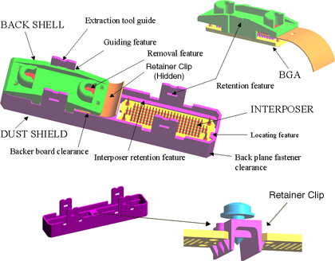
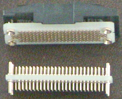
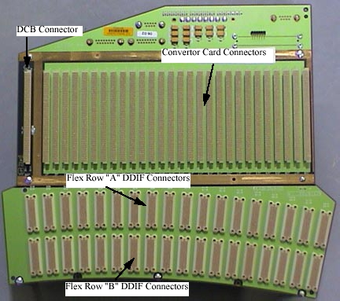
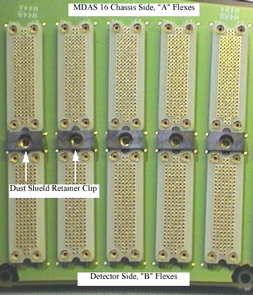

Operating Documentation
Direction 5114045-800, Rev# 10
LightSpeed 4.X Service Information (Advanced)
Operating Documentation |
| Last Revised: | March 15, 2005 |
| Exercise all ESD precautions when installing Detector Flexes to the DAS 16 backplane. Use of a ground wrist strap and Nitrile gloves is required, when handling the Detector Flexes. | |
| Potential for Eye Injury. | |
| Use appropriate eye protection, when using Amax. | |
| Use Aero Duster or Amax Circuit Board cleaner to remove any dirt, debris or oils from electrical contacts. Special tools (shipped with each system) are required for the removal of the flex leads and interposer. |
| Failure to follow correct procedures can result in bent or broken Interposer pins. This can result in intermittent artifacts, noise, or DAS Chassis/Detector replacement. Never use screwdrivers, pocket knives etc, to service the DDIF. | |
Illustration 1: DDIF Assembly

Illustration 1 identifies the major components and design features of the DDIF.
BGA: Circuit board material with female pins pressed in. Used on both the flex leads and DAS 16 backplanes.
Backshell: A molded plastic part specifically designed to allow flex removal from the DDIF using the Flex Extraction Tool shown in Figure 7-42, on page 505.
Interposer: Circuit board material with male to male pins pressed in. Used to make the electrical connection between the flex leads and the DAS 16 backplane BGA connectors. Four large diameter pins provide electrical grounds and a self guiding feature when inserting the Interposer onto the backplane BGA connector.
Dust Shield: A molded plastic part designed for four basic functions:
Minimize dust contamination of the DDIF assembly.
Provide a positive locking feature to prevent the Interposer from loosening or falling off the DDIF during gantry rotation.
Provide a contact or guide point for the Flex Extraction Tool to press upon when removing flex leads from the DDIF.
Molded channel to aid in the attachment of the flex BGA to the Interposer and a positive locking feature to prevent the flex lead from loosening or falling off the DDIF during gantry rotation.
Retainer Clip: A molded plastic part, with metal female threads, designed to secure the Dust Shield in place. See Illustration 4.
Illustration 2: Interposer, Flex BGA, and Flex Backshell

| Failure to follow correct procedures can result in bent or broken Interposer pins. This can result in intermittent artifacts, noise, or DAS Chassis/Detector replacement. never use screwdrivers, pocket knives etc, to service the DDIF. | |
Illustration 2 shows the Interposer and BGA connector. Some features are;
Interposer has four large diameter pins to aid in mating to the BGA.
BGA connector has four large diameter pins which are coned to aid in mating to the Interposer.
| Interposer pins are very fragile. Do not attempt to straighten bent pins. Replace Interposers with bent pins. Replace interposers with very loose pins, more than 5 degrees of deflection. | |
Illustration 3: DAS 16 Backplane Layout (Right Backplane Shown)

Illustration 3 shows the arrangement of the Right Backplane. The DCB and Convertor slots as well as the DDIF A and B row identification. The center and left backplanes are similar.
Illustration 4: DAS 16 DDIF

Illustration 4 highlights the Dust Shield Retainer clip. These clips can be replaced if needed.